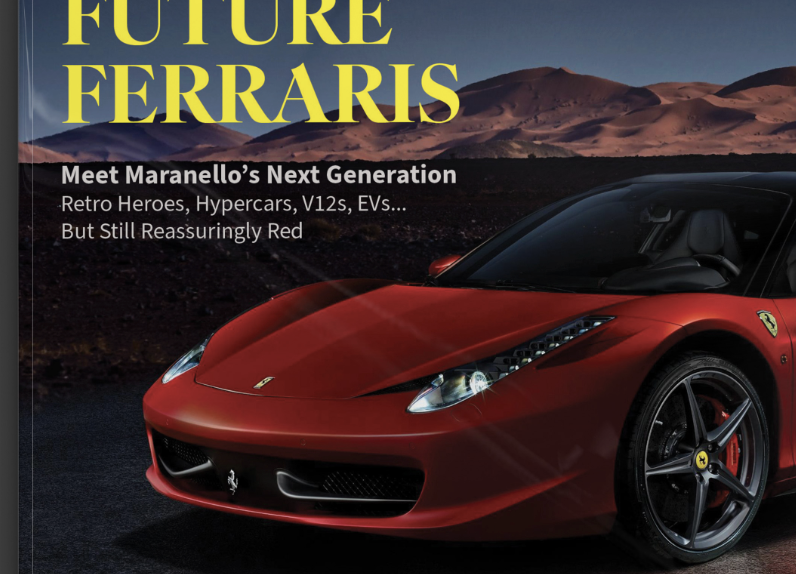
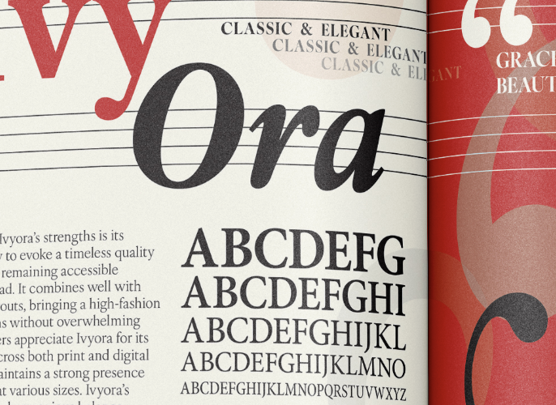
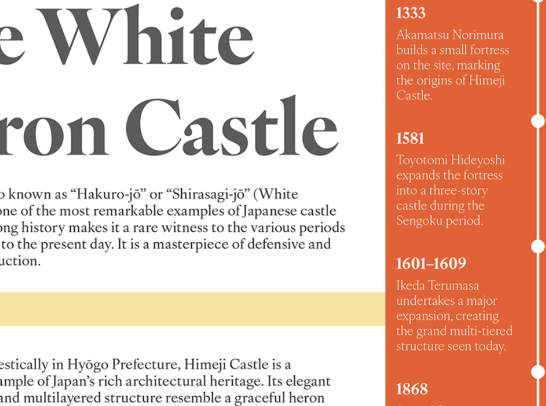
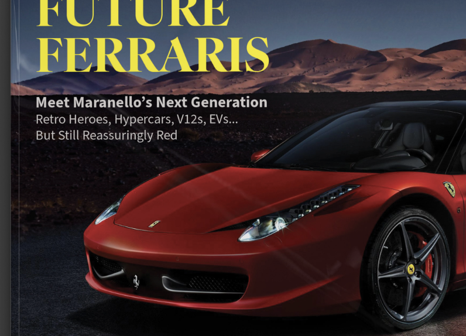
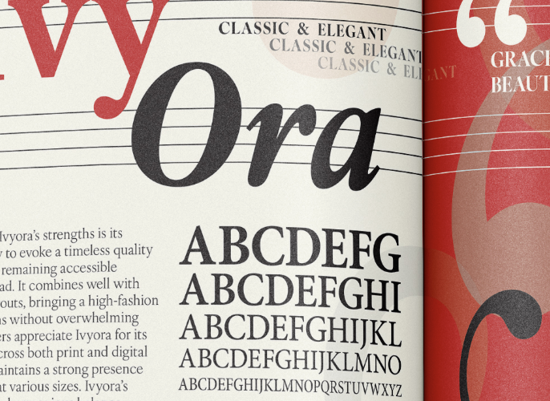
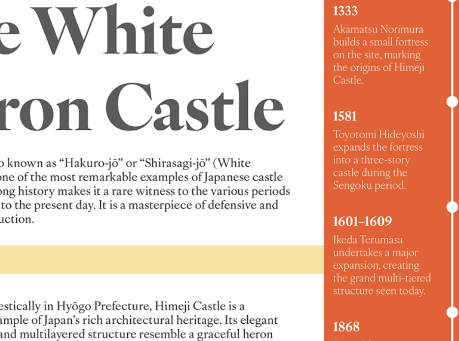

Hello, I'm Jennifer.
A student designer exploring creative projects in web and graphic design. This site showcases my work, my background, and my past projects.
"Design is about solving problems and telling stories visually."
Featured
|  | |
|  |  |
A student designer exploring creative projects in web and graphic design. This site showcases my work, my background, and my past projects.
"Design is about solving problems and telling stories visually."
|  | |
|  |  |